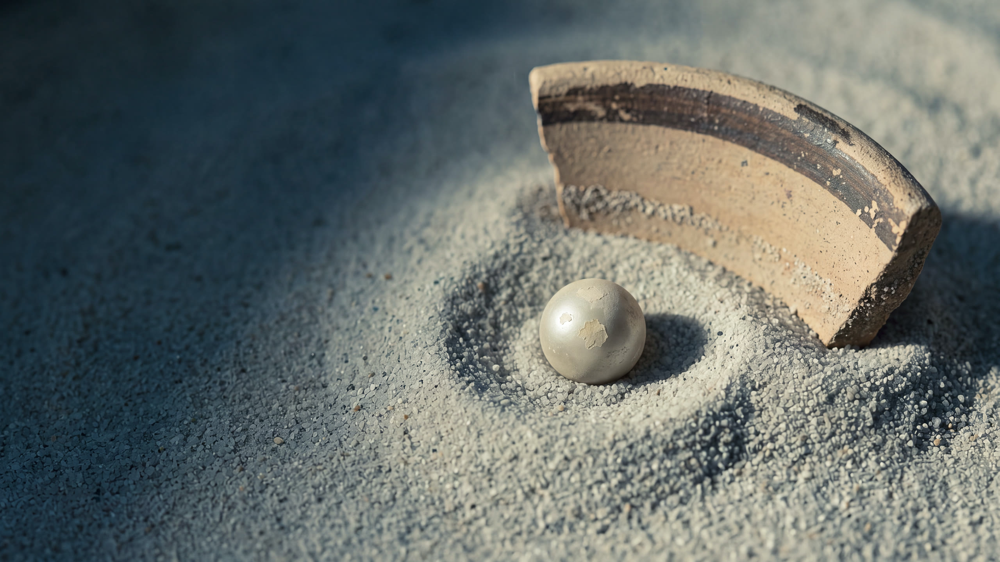
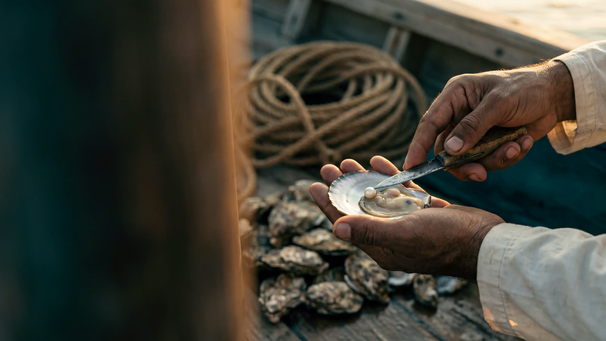
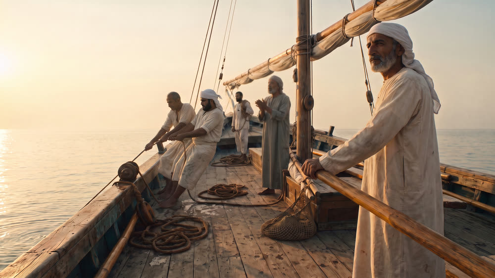
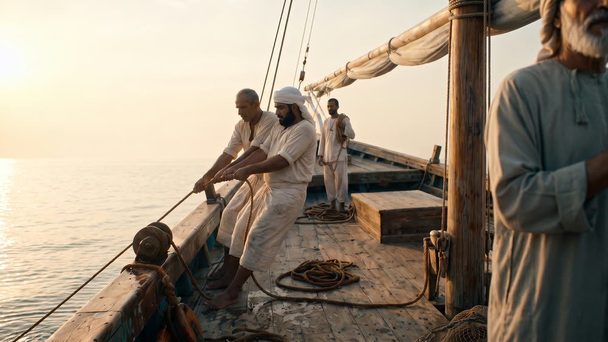
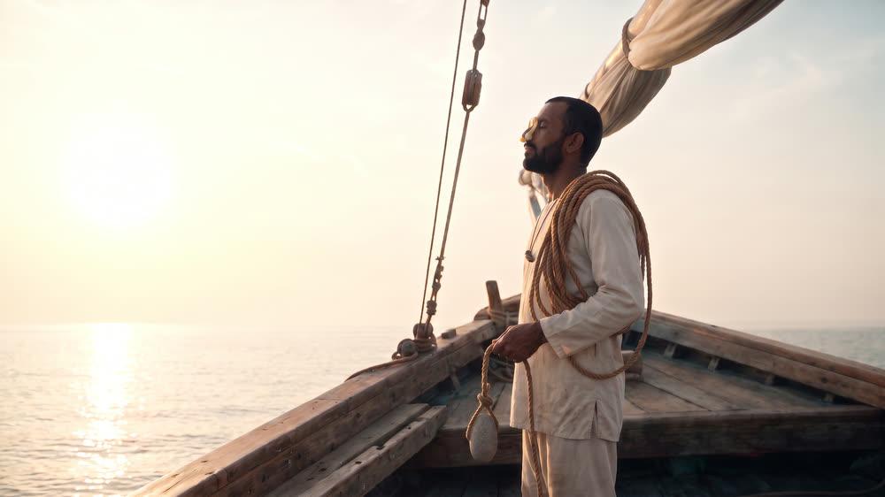
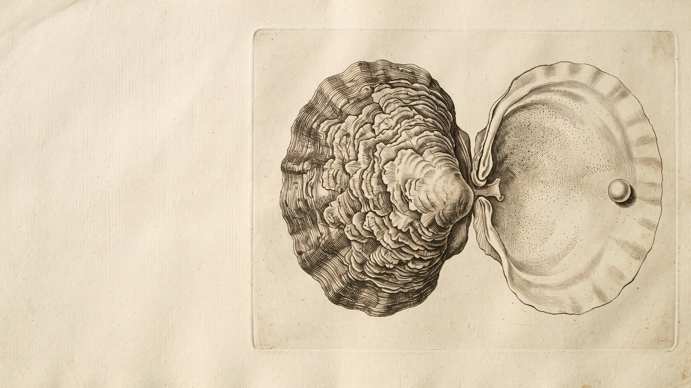
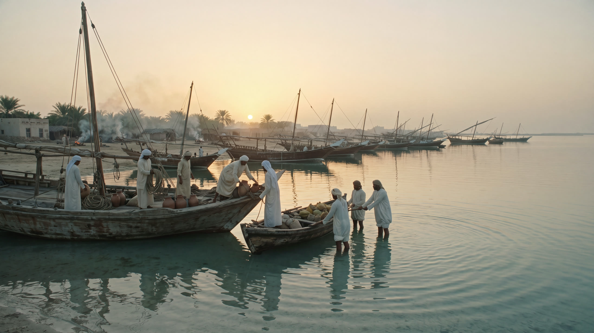
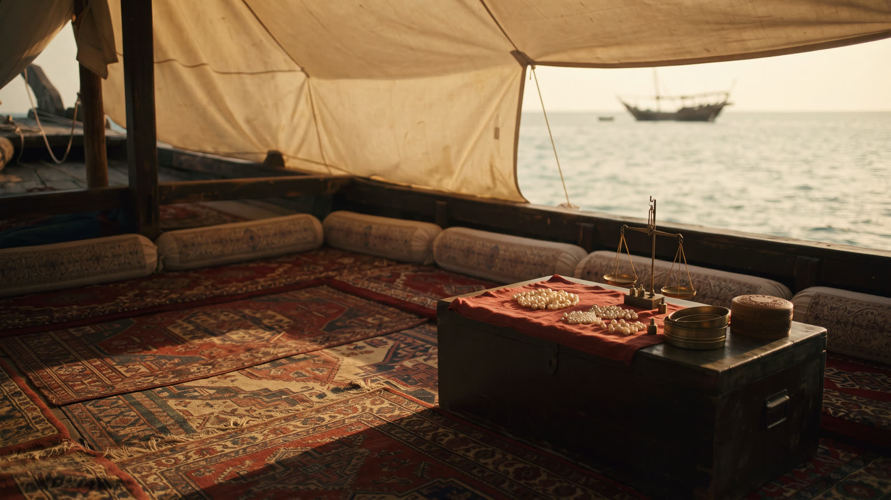

Our History
Before the towers, pearls built the Gulf.
Pearling was the foundation on which most of the big merchant dynasties of the Gulf built their fortunes.
Take a trip back through time.
An ancient pearl and a pottery shard, reimagined
About 7,000 years ago. The oldest known Gulf pearl
It begins with one small pearl.
The oldest known Gulf pearl, found by archaeologists in Kuwait, is 7,000 years old.
Some of the best natural pearls in the world came from the oysters living in the warm, shallow waters of the Gulf.

Pearl divers
1637, 1046H. During certain times of the season divers also wore cotton suits (libis) to protect them from jelly fish stings.
Attacks from sharks and sawfish also happened from time to time.
The life of a diver was often short and harsh.

1637, 1046H. Life on board
The crew opening the oyster shells the following day.
Nobody dived alone. Every shell passed through many hands before its pearl was found.

Nakhuda, the captainAt the stern, by the tiller 
Saib, the haulersThey pulled the divers back up 
Ghais, the diverOne rope, one stone, one breath
1681, 1092H. Pearling in the Gulf
Pearling in the Gulf
“The desire for pearls is a thing which is found in all nations.”
Abu Rian Al-Biruni, Persian Scholar

Some of the best natural pearls in the world came from the oysters living in the warm, shallow waters of the Gulf.
Pearls came to represent wealth and power from the shores of India to the Mediterranean and beyond.

Pearling dhows
1924, 1342H. “Dhows in harbors at the start of the pearling season.”
A Gulf harbour in the 1920s, reimagined
1926 to 1957, 1344 to 1376H. The floating academy of music
Every task had its song.
Music on board [was] particularly important, as their only entertainment was a diverse display of chants, songs, drumming and clapping that kept up their spirits and strengths.
“Everything on board the dhow was done to the accompaniment of singing, stamping, and hand-clapping.”
to hear the deck rhythm

1926, 1344H. Pearl merchants
The pearl merchant's launch was the antithesis of the diving dhow.
It was carpeted with Persian rugs and provided with cushions.

The end of an era
1949, 1368H. The last pearling fleet of any size put into Dubai.
By then, cultured pearls were reaching the world's markets, and the old trade was fading.
The Gulf, 1949
1963, 1383H. A new chapter on the Creek
From dhows to divers. A story that began in 1963.
Emirates NBD’s story began on 19 June 1963, when the late Sheikh Rashid bin Saeed Al Maktoum signed the Charter of Incorporation of the National Bank of Dubai (NBD), the first national bank established in Dubai and the United Arab Emirates (UAE).
Sultan Ali Al-Owais, the son of a pearl merchant, became a founder of the UAE’s first national bank. He kept the pearls, so that we may understand and respect a way of life now lost.
- 19 June 1963The Charter of Incorporation of the National Bank of Dubai is signed
- 06 March 2007NBD merges with Emirates Bank International to form Emirates NBD
- TodayThe Emirates NBD Pearl Museum, at the HQ on Dubai Creek
His wish: to display them “as a reminder of a way of life now lost forever.”